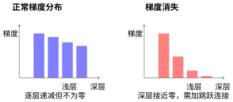
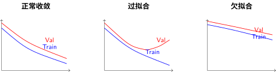

诊断与心法：当模型表现不佳时#
前面四节我们分别学习了四个维度的改造策略。现在是最后一关：面对一个实际表现不佳的模型，你怎么知道该用哪个策略？
症状与对策#
从训练和验证曲线的表现可以推断瓶颈：
症状 |
诊断 |
对应维度 |
改造策略 |
|---|---|---|---|
训练 loss 不降或降得很慢，测试 loss 也不降 |
容量不够（欠拟合） |
感受野 / 深度与连接 |
加深度、加宽度、检查训练配置 |
深层网络训不动，浅层梯度接近零 |
信息传不过去（梯度消失） |
深度与连接 |
加跳跃连接、密集连接 |
大物体差小物体好，或相反 |
感受野策略不对 |
感受野 |
多尺度 / 空洞卷积 / FPN |
训练/推理时间不可接受，显存不足 |
计算冗余 |
计算效率 |
DW 卷积、Bottleneck |
如何量化判断：诊断工具箱#
1. 判断欠拟合 vs 过拟合#
关键指标：训练准确率与验证准确率的差距
# PyTorch 示例：监控训练过程
def diagnose_model(model, train_loader, val_loader):
train_acc = evaluate(model, train_loader)
val_acc = evaluate(model, val_loader)
gap = train_acc - val_acc
if train_acc < 0.7 and gap < 0.05:
return "欠拟合：模型容量不够"
elif train_acc > 0.95 and gap > 0.15:
return "过拟合：需要正则化"
elif 0.05 < gap < 0.10:
return "正常：轻微过拟合，可接受"
else:
return "需要进一步分析"
经验阈值（分类任务）：
训练准确率 |
验证准确率 |
差距 |
诊断 |
行动 |
|---|---|---|---|---|
< 70% |
< 70% |
< 5% |
欠拟合 |
加容量、检查数据/代码 |
70-90% |
65-85% |
5-10% |
轻微过拟合 |
可加正则化或更多数据 |
> 95% |
< 80% |
> 15% |
严重过拟合 |
必须加强正则化 |
> 98% |
> 95% |
< 3% |
可能收敛 |
尝试更大模型或更多数据 |
2. 可视化梯度分布#
梯度消失/爆炸的定量判断：
def analyze_gradients(model):
grad_stats = {}
for name, param in model.named_parameters():
if param.grad is not None:
grad = param.grad.abs()
grad_stats[name] = {
'mean': grad.mean().item(),
'max': grad.max().item(),
'std': grad.std().item()
}
# 按层分组分析
shallow_grads = [v['mean'] for k, v in grad_stats.items()
if 'layer1' in k or 'conv1' in k]
deep_grads = [v['mean'] for k, v in grad_stats.items()
if 'layer4' in k or 'fc' in k]
shallow_mean = sum(shallow_grads) / len(shallow_grads)
deep_mean = sum(deep_grads) / len(deep_grads)
if deep_mean / shallow_mean < 0.01:
print("警告：深层梯度几乎为零，可能存在梯度消失")
elif deep_mean / shallow_mean > 100:
print("警告：深层梯度远大于浅层，可能存在梯度爆炸")
else:
print(f"梯度流动正常（比率: {deep_mean/shallow_mean:.3f}）")
可视化方法：

梯度分布可视化示意
3. 分析各类别准确率#
类别不平衡检测：
from sklearn.metrics import classification_report, confusion_matrix
def analyze_per_class(model, loader, class_names):
y_true, y_pred = [], []
for images, labels in loader:
outputs = model(images)
_, predicted = outputs.max(1)
y_true.extend(labels.numpy())
y_pred.extend(predicted.numpy())
# 逐类别分析
report = classification_report(y_true, y_pred,
target_names=class_names,
output_dict=True)
for cls in class_names:
precision = report[cls]['precision']
recall = report[cls]['recall']
f1 = report[cls]['f1-score']
support = report[cls]['support']
if f1 < 0.5 and support > 100: # 样本充足但表现差
print(f"类别 {cls}: F1={f1:.3f} (差)，可能需要专门优化")
elif f1 > 0.9:
print(f"类别 {cls}: F1={f1:.3f} (优秀)")
诊断意义：
模式 |
可能原因 |
解决策略 |
|---|---|---|
某几类持续较差 |
特征不明显/类别相似 |
加注意力、数据增强特定类 |
大类过好，小类过差 |
类别不平衡 |
加权损失、过采样小类 |
随机几类差 |
可能是标注错误 |
检查数据标注 |
所有类都差但均匀 |
模型容量不够 |
整体加容量 |
4. 学习曲线分析#
import matplotlib.pyplot as plt
def plot_learning_curves(history):
"""
history: {'train_loss': [...], 'val_loss': [...],
'train_acc': [...], 'val_acc': [...]}
"""
fig, axes = plt.subplots(2, 2, figsize=(12, 8))
# Loss 曲线
axes[0,0].plot(history['train_loss'], label='Train')
axes[0,0].plot(history['val_loss'], label='Val')
axes[0,0].set_title('Loss Curves')
axes[0,0].legend()
# 准确率曲线
axes[0,1].plot(history['train_acc'], label='Train')
axes[0,1].plot(history['val_acc'], label='Val')
axes[0,1].set_title('Accuracy Curves')
axes[0,1].legend()
# 学习率变化（如果使用学习率调度）
if 'lr' in history:
axes[1,0].plot(history['lr'])
axes[1,0].set_title('Learning Rate')
# Gap 分析
gap = [t - v for t, v in zip(history['train_acc'], history['val_acc'])]
axes[1,1].plot(gap)
axes[1,1].axhline(y=0.1, color='r', linestyle='--', label='过拟合阈值')
axes[1,1].set_title('Train-Val Gap')
axes[1,1].legend()
plt.tight_layout()
return fig
学习曲线诊断：

典型学习曲线模式
诊断决策树：
曲线模式 |
诊断 |
优先级行动 |
|---|---|---|
验证集 loss 持续下降 |
还没收敛 |
继续训练 |
验证集 loss 平台期 |
可能收敛 |
降低学习率微调 |
验证集 loss 先降后升 |
过拟合 |
早停 + 加强正则化 |
训练集 loss 下降慢 |
学习率小/梯度问题 |
增大学习率/检查梯度 |
两条曲线都很高 |
欠拟合 |
加模型容量 |
Gap 越来越大 |
严重过拟合 |
立即干预 |
完整的诊断流程图#
流程图卡在"修改模型架构"节点后，按下表判断具体改动：
症状 |
瓶颈在哪个维度 |
改造策略 |
|---|---|---|
容量不够（训练 loss 不降） |
感受野 / 深度与连接 |
加宽度（通道数）、加深度（层数）、多尺度并行 |
过拟合（验证远差于训练） |
正则化 |
数据增强、Dropout、权重衰减 |
深层训不动、浅层梯度接近零 |
深度与连接（操控深度与连接：信息如何在网络中流动） |
跳跃连接、密集连接 |
大物体差小物体好，或相反 |
感受野（操控感受野：网络应该看多大） |
多尺度并行、空洞卷积、FPN |
背景干扰大 |
注意力（操控注意力与长程依赖：信息该走哪条路） |
通道注意力（SE-Net）、空间注意力（CBAM） |
推理速度太慢 |
计算效率（操控效率：如何在效果与速度间权衡） |
DW 卷积、Bottleneck |
远距离关联失效 |
注意力（操控注意力与长程依赖：信息该走哪条路） |
Self-Attention、Non-local |
所有指标都还行但不理想 |
可能已达到瓶颈 |
更多数据、迁移学习与微调：站在巨人的肩膀上 |
验证诊断：与消融研究的结合#
上述诊断流程给出了假设（“可能是容量不够”），但如何验证这个假设？这就是 CNN 消融研究：理解卷积神经网络各组件的作用 的价值所在。
诊断 → 消融的闭环#
实用的消融策略#
你的假设 |
消融实验设计 |
观察指标 |
|---|---|---|
感受野不够 |
在 baseline 上加一个 5×5 卷积分支 |
大物体 mAP 是否提升？ |
跳跃连接有帮助 |
移除 ResNet 的跳跃连接，训练对比 |
深层梯度是否消失？收敛速度？ |
SE 模块有用 |
在相同位置分别加 SE / 不加 SE |
准确率提升 vs 参数量增加 |
DW 卷积可接受 |
将某层换成 DW+Pointwise，对比效果 |
计算量下降 vs 准确率下降 |
关键原则（来自 实验设计）：
一次只改一个变量——如果你同时加宽度和加 SE 模块，就不知道是哪个起作用
控制计算量——消融不是为了刷分，是为了理解组件价值
记录所有指标——不只是最终准确率，还包括训练速度、收敛稳定性、梯度分布
诊断与消融的迭代#
第一次迭代
诊断：欠拟合，需要加容量
消融：加宽度 64→128
结果：训练 loss 下降更快，但验证 loss 也上升 → 过拟合！
第二次迭代
诊断：容量够了，但需要正则化
消融：保持 128 宽度，加 Dropout 0.5
结果：验证 loss 下降，gap 缩小
第三次迭代
诊断：还有提升空间，试试多尺度
消融：在第二、三 stage 加 FPN 融合
结果：小物体检测提升 3%，但大物体下降 1%
结论：多尺度有帮助，但融合策略需要调优
这个迭代过程就是架构设计的科学方法：假设 → 实验 → 验证 → 修正。没有消融研究的诊断只是猜测。
更多消融实验的方法论，参见 引言：消融研究的科学方法论 和 实验设计。
反直觉案例#
以下是一些容易让初学者走弯路的常见误区：
案例一：为什么"加更多层"不一定好？#
ResNet：深层网络的突破 展示了退化问题：56 层网络比 20 层更差。
直觉错误：深度 = 表达力，所以越深越好。
真相：深度增加表达力，但也增加优化难度。没有跳跃连接的 56 层网络信息早已丢失殆尽——不是"没学到"，而是"根本谈不上学习"。
启示：加深度之前，先保证信息通路。
案例二：为什么参数少反而更好？#
GoogLeNet 6.8M 参数，远少于 VGG 的 138M，但效果更好。Inception：多尺度感受野的探索 已经展示了这点。
直觉错误：参数 = 能力，所以参数多一定好。
真相：参数多意味着搜索空间大，更难优化。精巧的归纳偏置（多尺度、跳跃连接）比暴力堆参数更有效。
启示：追求"优雅"而非"庞大"。
案例三：注意力总是越多越好？#
直觉错误：注意力就是好，越多越强。
真相：注意力增加计算，且不同类型的注意力适用场景不同。通道注意力（SE-Net）几乎通用——因为"调整特征通道的权重"在分类、检测、分割中都有效，代价极小。但空间注意力（CBAM）和自注意力（Non-local）就有取舍了：对于 MNIST 这种信息密度高的简单任务，几乎所有位置都很关键，空间注意力几乎没有增益；而在 COCO 等复杂场景中，需要定位目标位置，空间注意力的提升才显著。
启示：通道注意力是"默认推荐"——代价极低、几乎稳定提升；空间注意力和自注意力则是"按需使用"——只在信息过剩、需要选择性关注时才有意义。
改造十诫#
架构设计心法十诫
观察先行，再动刀。看训练曲线、梯度分布、各类别准确率，不要凭感觉改。
从简到繁，逐步验证。每次只改一个变量，否则你永远不知道哪个改动真正有效。
先修信息通路，再增信息容量。先保证跳跃连接，再考虑加深度。
感受野与目标大小匹配。目标大 → 大感受野，目标小 → 小感受野，都有 → 多尺度。
注意力解决"不知道看哪"，不是万能药。先看信息有没有、通路通不通，再决定注意力。
效率优先，延迟优化。先跑出好结果，再考虑加速。
多尺度是永恒主题。无论感受野、FPN 还是注意力，核心都是"不要只用一个尺度"。
不迷信新技术。新技术 = 新归纳偏置，关键看它解决了什么信息论问题。
外部变量先排除。学习率、优化器、数据预处理出错的概率比架构问题大多了。
保持怀疑。论文里的 SOTA 架构可能不适用你的场景。没有"最好"的架构，只有"最适合"的架构。
心法实践：一个改造示例#
下面是一个简短的示例——在一个基础 CNN 上同时应用跳跃连接、SE 注意力和 DW 卷积：
import torch
import torch.nn as nn
class ModifiedBlock(nn.Module):
"""融合了三个维度改造策略的基础模块"""
def __init__(self, in_ch, out_ch, stride=1, expansion=4):
super().__init__()
hidden_ch = out_ch // expansion
# 维度四（效率）：Bottleneck 降维
self.conv1 = nn.Conv2d(in_ch, hidden_ch, 1, bias=False)
self.bn1 = nn.BatchNorm2d(hidden_ch)
# 维度四（效率）：DW 卷积——空间和通道分离
self.dwconv = nn.Conv2d(hidden_ch, hidden_ch, 3, stride,
padding=1, groups=hidden_ch, bias=False)
self.bn2 = nn.BatchNorm2d(hidden_ch)
self.conv2 = nn.Conv2d(hidden_ch, out_ch, 1, bias=False)
self.bn3 = nn.BatchNorm2d(out_ch)
# 维度三（注意力）：SE 模块——知道哪个通道重要
self.se = nn.Sequential(
nn.AdaptiveAvgPool2d(1),
nn.Conv2d(out_ch, out_ch // 4, 1), # r=4 降维
nn.ReLU(inplace=True),
nn.Conv2d(out_ch // 4, out_ch, 1), # 升维
nn.Sigmoid()
)
# 维度二（深度与连接）：跳跃连接——信息流动的退路
self.skip = nn.Identity() if stride == 1 and in_ch == out_ch else \
nn.Sequential(nn.Conv2d(in_ch, out_ch, 1, stride, bias=False),
nn.BatchNorm2d(out_ch))
def forward(self, x):
residual = self.skip(x)
out = self.conv1(x)
out = self.bn1(out)
out = nn.ReLU(inplace=True)(out)
out = self.dwconv(out)
out = self.bn2(out)
out = nn.ReLU(inplace=True)(out)
out = self.conv2(out)
out = self.bn3(out)
out = out * self.se(out) # 通道注意力：每个通道乘一个 0~1 重要性系数
out += residual # 跳跃连接：从不衰减的梯度通道
return nn.ReLU(inplace=True)(out)
心法与代码的对应：跳跃连接保证梯度通路 → residual；SE 注意力选择重要通道 → se(out)；DW 卷积降低计算量 → groups=hidden_ch；Bottleneck 降维执行 → out_ch // 4。
从"心法"到"实战"#
掌握心法后，下一步就是实战。后面的 迁移学习与微调：站在巨人的肩膀上 将展示预训练模型上的改造策略——当你面对数据稀缺的场景时，如何站在巨人的肩膀上应用这些心法。
不需要从头训练的架构改造，才是工业界最常见的情况。让我们继续前进——
贡献者与修订历史
查看详细修订记录
-
f159d562026-05-08 - Heyan Zhu: fix: address complaints from the linter -
15d1b152026-05-03 - Heyan Zhu: docs(model-architecture-design): add new chapter on CNN architecture design methodology